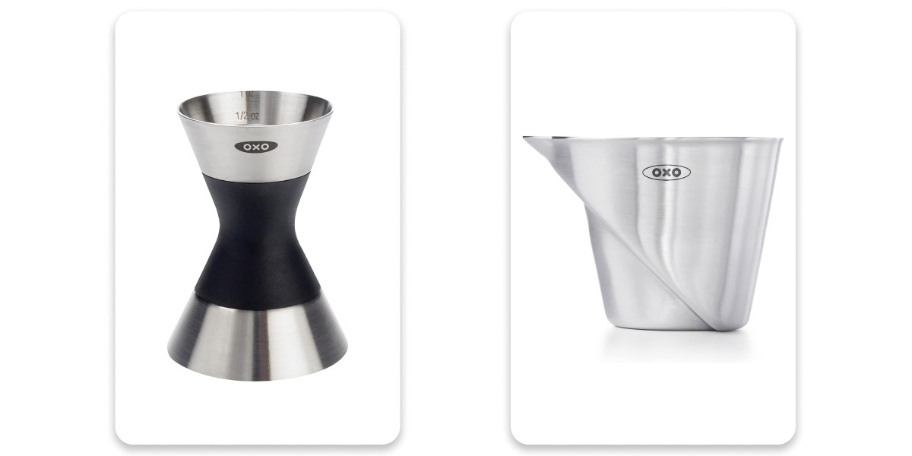
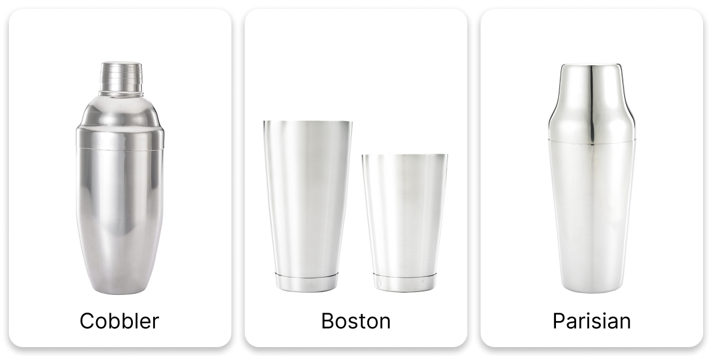
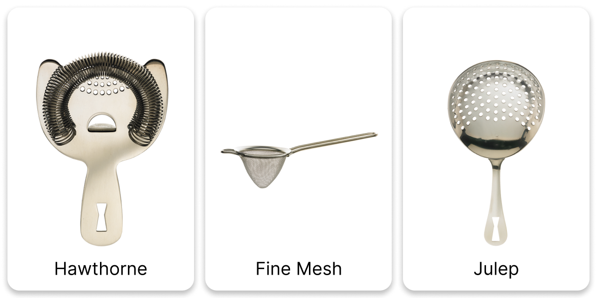
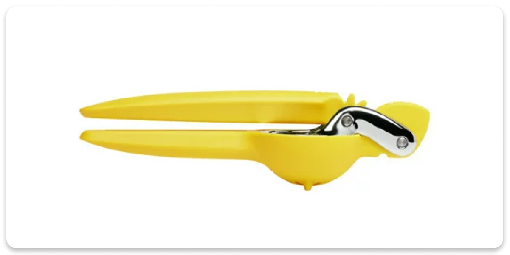

5 minutes
Basic Bar Tools
So you want to mix drinks. You’ll need some tools to get started. In this post, we’ll walk through the tools you’ll need, the brands and products I recommend, and what to avoid. Everything you need can be found on Amazon and is relatively cheap. If you want to grab an easy starter kit, grab the Barfly Essential Kit. If you’d rather assemble your kit on your own, this list will help you figure out what you need. Let’s get started!
Measure

A jigger is just a small measuring cup. They traditionally have a 1.5oz cup on one side and a 0.75oz cup on the other. The name, we think, comes from the prohibition days. It may have been a shortening of “thingamajigger.” Is there any credence to this claim? I don’t know. But it’s kind of cute, and I like thinking it’s true.
I actually recommend two jiggers. Both of from OXO and they can be purchased as a set. Go grab the OXO SteeL Angled Measuring Jigger & SteeL Double Jigger. They’ll last forever and are well worth the price.
Shake
There are a few kinds of shakers you’ll run into in the wild. The cobbler, the boston, and the parisian.

The cobbler shaker is by far the most popular in big box stores. You’ve likely seen OXO’s cobbler shaker at Target without realizing it. It’s commonly included in “mixology gift sets” because it has a built-in strainer and jigger. As is typically the case, though, added complexity results in reduced performance. These things leak like CRAZY. Since there are two seals, they tend to leak more frequently than the other varieties. The’re also a huge pain to break apart once you’ve finished your shake. It’s really hard to get a good purchase on the lid of a cobbler shaker. Avoid the cobbler shaker.
The boston shaker is the bartender’s shaker-of-choice. It’s easy to handle, breaks apart easily, very rarely leaks, and is a breeze to clean. It’s pretty common to use the smaller tin to combine your ingredients and the larger tin to hold the ice. You then dump your mix into the larger tin, affix the smaller tin, and shake it up. To break it apart, you just pull the smaller tin away from the side to which it is tilted and it will break apart with ease.
The parisian shaker is kind of like a boston, but with a worse seal. I’m not really sure I understand why this shaker exists. Don’t buy this one.
To recap, get the Barfly Weighted Shaker Tin Set. Don’t get a weird color. Just get stainless. The colorful ones will break down and need to be replaced. The Stainless option should be good for a lifetime of home use.
Stir
Typically, when a cocktail doesn’t call for citrus, you stir it. The negroni, for example, is equal parts gin, vermouth, and campari. This is a stirred drink. So let’s stir it. Grab yourself a Barfly Bar Spoon and a Barfly Mixing Glass. Barfly’s spoon is long and twisty (good for stirring) and their mixing glass is heavy (good for not sliding off the counter).
Strain

You don’t always want your mixing ice to be your drinking ice. That’s why we strain. There are three strainers you’ll want behind the bar. The most important type is the Hawthorne strainer. It uses a round spring to keep small chips of ice out of your drink. When you pour the contents of your shaker into the glass, you’re not just pouring the liquid out. You’re also pouring any solids from the tin into your drink. Sometimes, that’s desireable. For example, when making a mojito, you just dump the whole tin into the glass. But if you’re making a sidecar, you’ll want to prevent the broken ice from the shaker form making it into the glass. When you want to pour over fresh ice, you’ll need a Hawthorne strainer. It’s important to find one with a tightly wound coil spring. The tighter the coils, the less detritus will pass through it. I like the Barfly Heavy Duty Hawthorne Strainer (not sponsored).
In addition to keeping the dirty ice out of your drink, you may also want to keep citrus pulp out as well. For this, we use a fine mesh strainer. You’ll use the Hawthorne strainer to hold the big ice back and then pour through the fine mesh strainer to catch the pulp. Make sure you get one with a pointy bottom for the best flow rate. As usual, Barfly is the way to go. Grab a Barfly Fine Mesh Strainer.
Finally, for stirred cocktails, you’ll want a strainer that fits in a mixing glass. For this, we use the Julep strainer. You can totally just slap a Hawthorne strainer in you mixing glass and call it a day. It’s maybe not quite as proper, but you’ll survive. If you want to grab a Julep strainer, the good people at Barfly have you covered. Barfly Julep Strainer.
Squeeze

There’s a reason nearly every cocktail recipe calls for fresh fruit juice. The juicer I like is from a company called Chef’n. I like this one because it uses a gear system to give the user a mechanical advantage. For every 2 degrees you press the handle, you get one degree of movement out of the press. This means you get twice the force. Now the downside is that the bowl, handle, and gears are made of plastic. This means it can flex. If you make a lot of drinks, get a stainless steel simple juicer. If you juice casually, the Chef’n FreshForce is just fine. Make sure you get the yellow one. The green one is for limes and won’t work for lemons and the orange one is for oranges and won’t work for limes. The yellow one is for lemons and works just fine for limes.